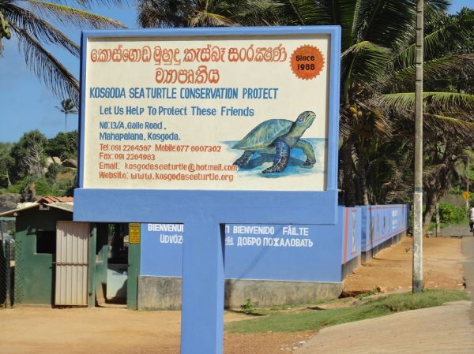
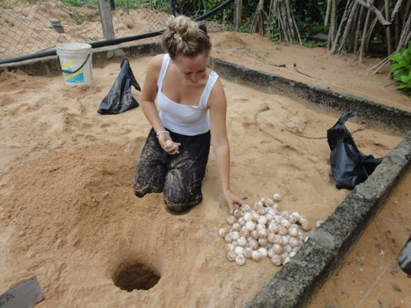
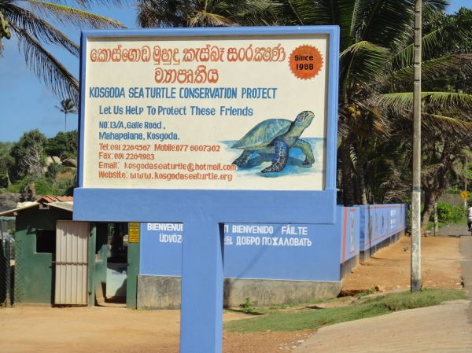
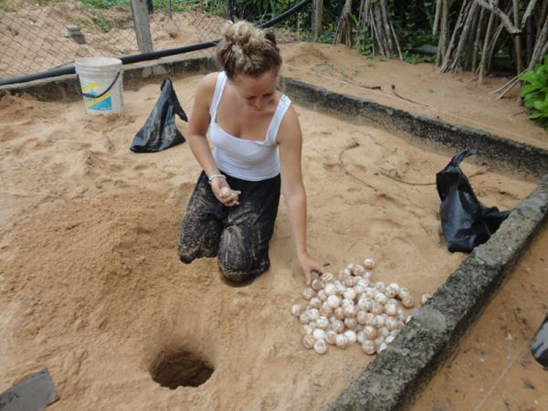
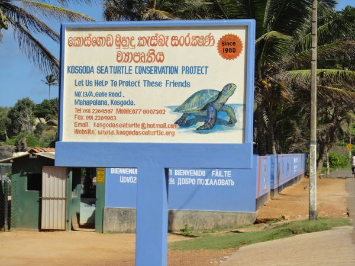
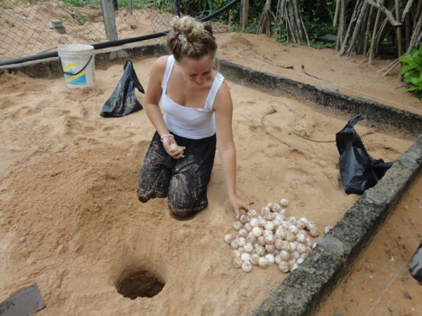

The project started by Dudley Perera in 1988. The project's major goals are to keep an eye on local sea turtle activities and protect nearby nesting areas. We want people to understand how vulnerable these lovely animals are and how crucial it is to contribute to their protection before it's too late.
The project's hatchery is one of its most vital components. Before being reintroduced into the water, saved and gathered eggs can safely develop within the project's sanctuary away from scavengers. Additionally, a specific number of each hatching is withheld for a brief time for "headstarting" prior to release.


In order to ensure that any mother turtles have suitable circumstances to lay eggs, our volunteers monitor the beach at night. They also transport the eggs back to the hatchery to ensure proper hatching without predator injury, and once fully hatched, they release the young sea turtles back into the ocean. They also care for disabled sea turtles and cure those that have grown frail as a result of fishing activity.
When visiting the hatchery, visitors will receive instructions on how to preserve the sea turtles and ensure that they are properly hatched. The hatchery is also open in the evening when the young turtles are released into the water because there is less of a chance of encountering predators at that time.
Timings: 8.30 AM - 5.30 PM, Turtle Releasing - 6.30 PM
Entry: LKR. 1000 for Person